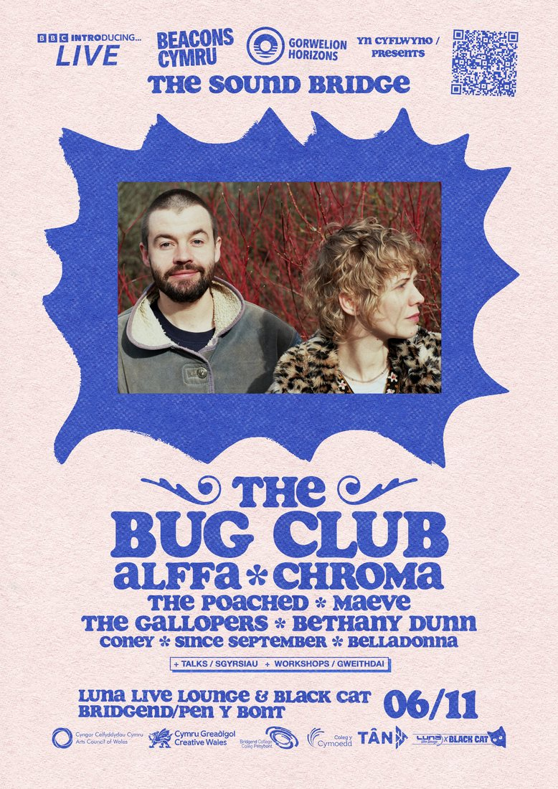

maeve join the bug club on the bill for bbc introducing live’s the sound bridge in bridgend
the south wales six-piece play black cat in bridgend on friday 6 november, as bbc introducing, horizons / gorwelion and beacons cymru bring a day of new music talks and live sets to the town.

maeve have been confirmed for the sound bridge, bbc introducing live’s event in wales, playing black cat in bridgend on friday 6 november.
presented by bbc introducing with horizons / gorwelion and beacons cymru, in partnership with bridgend college, the sound bridge pairs a day of new music talks, workshops and industry discussions with an evening of live performances. sub pop-signed the bug club headline, with maeve joining a bill of artists from across wales: alffa, chroma, the poached, the gallopers, bethany dunn, coney, since september and belladonna.
tickets are on sale now via skiddle.

the sound bridge is part of this year’s bbc introducing live programme, which runs through november in ten cities across the uk with gigs, workshops, panels and networking for emerging artists.
it caps a fast first year for maeve. together only since march 2026, the six-piece make loud, wordy, gritty post-punk with shoegaze hooks and haze, and have already played weekend rumble, shunkfest and orange light festival, supported dead dads club, sold out venues in newport and cardiff, and are already booked to play at sŵn festival 2026.
debut single ‘behind your smile’, produced by skindred founding guitarist jeff rose, earned bbc introducing wales airplay and a native radio discovery of the week nod. next up is ‘sacrifice’, recorded with rockfield producer nick brine (teenage fanclub, nada surf).
notes to editors
the sound bridge: bbc introducing live with horizons / gorwelion and beacons cymru, in partnership with bridgend college. friday 6 november 2026, black cat, bridgend. talks, workshops and industry sessions through the day, live music in the evening, doors 6pm.
line-up: the bug club (headline), alffa, chroma, the poached, maeve, the gallopers, bethany dunn, coney, since september, belladonna.
maeve are a six-piece from south wales. management: sain bureau, info@sainbureau.com